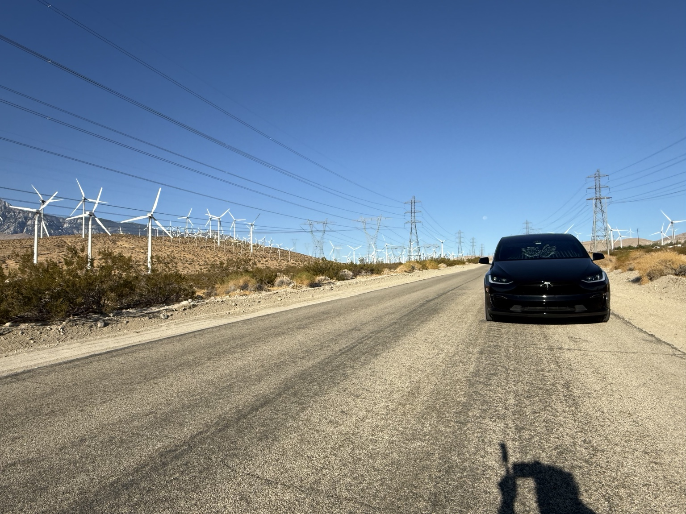

{kind=link}
Vernon Rd Utilities — Field View
Short field clip documenting the utility poles, overhead lines and roadside infrastructure adjacent to the site.
A visual record of the Whitewater property as it exists today — including landscape, road frontage, neighborhood context, property markers and nearby infrastructure — with room to document every future stage.
Development is easier to understand when the site record is organized. This page keeps the property’s actual photos and videos separate from conceptual ideas, so visitors can distinguish what exists today from what may be considered later.
As the project moves forward, the same journal can capture survey work, utility verification, site preparation, design decisions, construction and completion.
These field photographs retain the GPS Map Camera information captured on site, providing visible date, time and location context as part of the property documentation.





Video adds context that still photos cannot — road alignment, frontage, surrounding terrain, infrastructure and the relationship between the property and its immediate surroundings.
Short field clip documenting the utility poles, overhead lines and roadside infrastructure adjacent to the site.
Recorded view along the paved 16th Ave side of the property.
General walkthrough footage showing current site conditions and surrounding landscape.
Site photos, field markers, road frontage, neighborhood context and infrastructure observations.
Future boundary confirmation, utility-provider information and development-standard research.
Future concepts, site placement, permitting documentation and preparation milestones.
Progress photos, videos and a final record of how the property evolves.